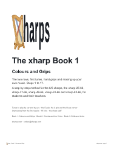
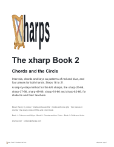
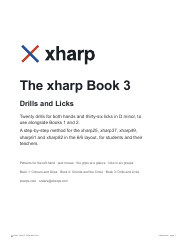

Every key.
Two rows.
No levers.
Play in any key, the moment you sit down. Every note has its own string, in two rows that cross under your hands. There are no levers to flip and no pedals to learn. Learn a 6/6 pattern once and it works in all twelve keys, so transposing is easy.
A concert range at about half the weight of a pedal harp. Five sizes: tiny, small, medium, large and extra large. 6/6 or 7/5 string layouts. Instruction and music theory written for the xharp.
xharp opens in January 2027. Until then nothing is for sale and all the music here is free. Tell us what you would want, and we will write when it is ready.

Five sizes, one string list
Every xharp uses the same strings for the same notes, and each has a model number that reads xharp-strings-layout: the xharp-82-66 has 82 strings in the 6/6 layout, and the xharp-82-75 has the same 82 strings in the 7/5 layout. Sizes run from the handheld xharp-25 to the xharp-82. Side views to one scale, each drawn from its own design. The xharp-82's design is complete; the four smaller harps are first design passes and will change.
They are built from layered birch plywood, which stays stable and lets every part be cut precisely, with a Sitka spruce soundboard, the classic wood for a harp's voice.
xharp-25
- Strings
- 25
- Range
- C5 to C7
- Height
- 0.50 m · 20 in
- Weight
- 4 kg · 9 lb
- Models
- xharp-25-66
xharp-25-75 - Longest
- 32 cm · 12 in
xharp-37
- Strings
- 37
- Range
- C4 to C7
- Height
- 0.73 m · 29 in
- Weight
- 8 kg · 18 lb
- Models
- xharp-37-66
xharp-37-75 - Longest
- 52 cm · 20 in
xharp-49
- Strings
- 49
- Range
- C3 to C7
- Height
- 1.08 m · 43 in
- Weight
- 12 kg · 26 lb
- Models
- xharp-49-66
xharp-49-75 - Longest
- 74 cm · 29 in
xharp-61
- Strings
- 61
- Range
- C2 to C7
- Height
- 1.31 m · 51 in
- Weight
- 15 kg · 33 lb
- Models
- xharp-61-66
xharp-61-75 - Longest
- 101 cm · 40 in
xharp-82
- Strings
- 82
- Range
- B0 to G♯7
- Height
- 1.48 m · 58 in
- Weight
- 19 kg · 41 lb
- Models
- xharp-82-66
xharp-82-75 - Longest
- 121 cm · 47 in
Nothing is for sale before January 2027. Prices are planned and in US dollars, before shipping and sales tax. The xharp-82 prototype is built and tested first; the smaller harps follow once it has held full string tension for six months.
Two string layouts: pick the one that suits you
Every xharp can be strung either way. Both have all twelve notes in two crossing rows; they differ in which notes share a row.
Six notes on each row, a whole step apart. Every key uses one of just two hand shapes, so a pattern learned once moves to all twelve keys. The xharp sheet music, drills and handouts on this site are written for this layout.
The seven natural notes on one row and the five sharps on the other, like the white and black keys of a piano. Familiar if you play piano or a lever harp, and C major lies on one row. Each key has its own shape, as it does on a piano.
Learn a grip once, play it in every key
On a 6/6 xharp the notes alternate between two rows: C, D, E, F♯, G♯, A♯ on one; F, G, A, B, C♯, D♯ on the other. Move a hand shape up a whole step and every note stays on its row, so the grip looks and feels the same. Move it a half step and the rows swap, so you play the mirror image.
Lessons and practice books are built on that idea: a handful of grips, practised over a simple left-hand pattern, then carried into all twelve keys. Try the minor pentatonic grip here.
Start with a free sheet: Amazing Grace, in two keys
One page for any 6/6 cross-strung harp: the melody with chords in G, then a half step higher in A flat. Under each note, o marks the C row and x the F row. Compare the two halves and every o has become an x: the tune keeps its shape and the rows swap.
On a lever harp, A flat means re-setting levers. Here it is the same hand shapes, mirrored.
Tune: New Britain, traditional. Words: John Newton, 1779. Public domain. Free to copy and share.
Written for two rows
Every xharp sheet shows which row each note is on, red or blue, so you read the shapes as well as the notes. It is written for the 6/6 layout. All of it is original or public-domain music, and all of it is free to download until xharp opens in January 2027. Most titles come two ways: in standard notation with the row marked under each note, and in xharp notation, a 13-line staff with red notes on the lines and blue notes in the spaces.

The xharp Book: sampler
The opening of Book 1: how the books work, the two colours and the first steps, with the covers of Books 2 and 3.
25↑37496182
The xharp Book 1: Colours and Grips
A step-by-step method from the first note: the two colours, hand grips, first pieces and 18 licks, with the xharp staff explained. To come as a download or a printed book by post.
253749↑6182
The xharp Book 2: Chords and the Circle
Chords in both hands, the circle of fifths in string colours and the chord book, with pieces that use them. To come as a download or a printed book by post.
253749↑6182
The xharp Book 3: Drills and Licks
20 drills for both hands and 36 licks to play over a left-hand pattern. To come as a download or a printed book by post.
253749↑6182Amazing Grace, in two keys
Melody and chords in G, then a half step higher in A flat, with the row under every note.
25↑37496182Grip Licks in D minor
36 original licks built from four-string hand placements, with finger numbers and the row under every note. Starts with the D grip and its mirror, the A grip.
2537↑496182xharp Drills
20 short drills for both hands: oom-pah, walking bass, Alberti patterns, rolled chords and more, with the chords named and the row under every note.
253749↑6182Old Hundredth
The hymn tune from the Genevan Psalter, 1551, in four-part chords in G. Public domain.
253749↑6182What Child Is This
Greensleeves, English traditional: the melody over held chords, in A minor. Public domain.
2537↑496182Guárdame las vacas
The Spanish Renaissance ground, a short chord pattern to play variations over. Public domain.
253749↑6182Prelude in E minor
Chopin, Op. 28 No. 4, bars 1 to 12: a slow melody over chords that slide down by half steps. Public domain.
253749↑6182The xharp Circle of Fifths
The circle of fifths in string colours: every key with its relative minor and diminished chord, the triad colours, the inversions, and all 51 chord types as two shapes each, one for a red root and one for a blue root.
2537496182xharp Chord Book
Every chord type drawn twice, on C and on C sharp, split between the hands. A whole-step move keeps the shape; a half-step move swaps the colours.
25↑37↑496182What each xharp can play
| Harp | Range | Works well | Limits |
|---|---|---|---|
| xharp-25 · tiny | C5 to C7 | Fingering, grips and right-hand patterns; short melodies | Everything sounds an octave or two higher than written. No bass, so left-hand parts and two-hand pieces do not fit. |
| xharp-37 · small | C4 to C7 | Melodies at pitch, the licks and the right hand of the method books | Nothing below middle C: left-hand parts move up an octave, and pieces with a wide bass do not fit. |
| xharp-49 · medium | C3 to C7 | The licks, most pieces and both hands of most drills | Bass notes below C3 move up an octave, so some two-hand pieces sound higher than written. |
| xharp-61 · large | C2 to C7 | Everything on this page, as written | None for this music. |
| xharp-82 · extra large | B0 to G♯7 | Everything on this page, as written, with room below and above | None. |
The markers compare each title's lowest and highest notes with each harp's strings. They do not check how comfortable a piece is on a small harp. The method books mix right-hand work, which fits the xharp-37, with two-hand pieces that need the bass of the xharp-49 or larger. The full books will be sold as downloads or as printed books sent by post; the sampler is free.
Learn the two rows
Planned from 2027. The teaching follows the free music on this page: grips first, then hymns and lead sheets, in every key with the same shapes.
In the workshop
From 2027One-to-one lessons in the Huntsville workshop. You do not need your own harp to start: students learn on the shop's xharp-82.
Planned at $50 an hourOnline
From 2027The same lessons by video call, for players with any 6/6 cross-strung harp. A camera on your hands is all the equipment needed.
Planned at $50 an hourPractice books
From 2027Grip-by-grip practice books for cross-strung harp: short drills over a left-hand vamp, then phrases that use each grip in all twelve keys. Original material, written for the two rows.
The sheets above are free in the meantimeBuild your own from a kit
Planned for after the prototype is proven. A kit is the harp with the machine work already done, so the building that is left is gluing, sanding, finishing and stringing.
What is in the box
Every wooden part CNC-cut and drilled at full size, the soundboard and soundbars tapered, the tuning pins, bridge pins, eyelets, bolts and inserts, a full set of strings, and a build manual.
What you do
Glue the layers, assemble the box, fit the soundboard, sand, finish, then string it and bring it up to pitch in stages. You need clamps, a flat bench and ordinary hand tools.
Which harps
From 2027The xharp-82 first. Kits for the smaller harps follow once each design has been built and played.
Planned: xharp-82 kit $4,500. Other sizes not priced yetPlans and CNC files
Planned for after the prototype is proven. For builders with their own CNC, or a shop nearby that will cut from files.
Drawings
The full drawing set: general arrangement, frame, body, shoulder, strings and pins, neck faces, the cut layout, and a sheet for every part with its hole table.
CNC files
A DXF for every sheet at full size, with the holes, roundovers and pockets on their own layers, and the 3D surfaces for the neck, soundboard and soundbars.
Build documents
From 2027The bill of materials with sources, the string list, and the step-by-step build plan with the tests to do before cutting.
Planned: xharp-82 plans $125. One harp per set, for your own useAmplify your xharp
A harp is quiet beside a band, a choir or a room full of people. These are the ways to make an xharp louder that are planned as options. None has been fitted to an xharp yet, so nothing here is a tested result.
Pickup-ready
Every harpThe output jack hole is cut by the CNC and the pickup positions are marked inside the box, behind the hand-access sound hole. Fit a pickup the day you buy the harp or years later, with no drilling.
Planned as standardPickup fitted
OptionContact pickups glued under the soundboard along the two soundbars and wired to the jack. Plug in like an acoustic guitar. Nothing shows from the front and nothing clips on.
The most resistant to feedback on a loud stageClip-on mic
OptionA small condenser microphone on a gooseneck, clipped at the sound hole. It hears the air in the box as well as the board, so it sounds the most like the harp does in the room.
The most natural sound; best in quiet rooms and for recording| Harp | Planned pickup | Suits |
|---|---|---|
| xharp-25 | One pickup, straight to an amp or headphone practice amp | Practice with headphones, small rooms |
| xharp-37 | Two pickups, one on each soundbar | Small rooms, worship teams |
| xharp-49 | Four pickups, bass and treble on each soundbar, with a preamp | Church, stage, recording |
| xharp-61 | Four pickups with a preamp | Church, stage, recording |
| xharp-82 | Four pickups with a preamp; add a clip-on mic to blend | Church, stage, recording |
Wear the X
Shirts, mugs, totes and stickers with the xharps logo and a few things harpists say. Nothing is on sale yet: these are first ideas, opening with the shop in January 2027. Tell me which you would wear and I will make those first.
I like harping about it!
T-shirt · mug · stickerWhen I'm crossed, I harp!
T-shirt · tote · stickerCross-strung, not high-strung.
T-shirt · mugDon't get cross. Get cross-strung.
T-shirt · toteNo pedals. No levers. No problem.
T-shirt · stickerX marks the harp.
Cap · sticker · toteTwelve keys, one pattern.
T-shirt · mugSix and six makes twelve.
T-shirt · stickerStop harping? Never.
T-shirt · mugWill harp for coffee.
MugGo ahead, pull my strings.
T-shirt · toteBirch, spruce and a lot of pluck.
T-shirt · shop apronWhere the xharp-82 stands
- 2026
Designed
Every part drawn, CNC files made, strength of the neck checked, build plan written.
- 2027
Prototype
Parts cut in Huntsville, the first xharp-82 built and strung.
- Late 2027
Proven
Six months at full string tension, the neck measured every month, recordings made.
- 2028
First harps
Three pilot harps at $5,500 for players who give feedback; lessons begin.
Tell us what you would want
xharp opens in January 2027. Nothing is for sale yet, and this is not an order. It tells us which sizes and offers to build first, and we will write to you once when yours is ready. Or write to orders@xharps.com.
Where the ideas come from
Oliver Prehn, NewJazz
The hand grips and the way of improvising taught in the xharp books are adapted for the harp from his piano lessons in modern jazz improvisation. He gives them away: in his words, "all Music stuff from NewJazz is free and public, as Music should be". None of his licks are published here.
His lessons on YouTube · newjazz.dk · Support him on Patreon
The mother-tongue approach
The order of work in the books, listen, copy, repeat and only then read, is the one many harp teachers know from the Suzuki method.
The cross-strung harp
Two crossing rows of strings are an old idea, and the 6/6 and 7/5 layouts are in use by other makers and players. The xharp is one more of them. The tunes on this site are in the public domain; everything else was written for the xharp.
xharp is not affiliated with, or endorsed by, any of the people or methods named here.